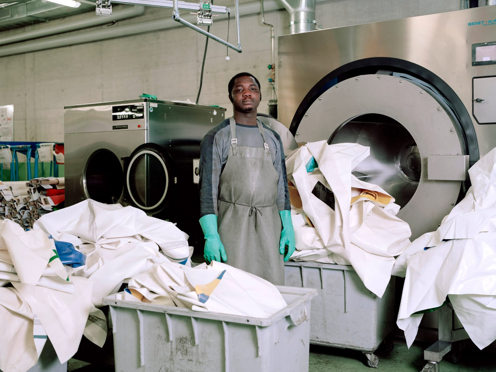

프라이탁은 초창기부터 현재까지 재활용품의 업싸이클링을 이용하여 가방을 만들고 있습니다.
현재 프라이탁의 연매출은 500억원으로 사람들에게 매우 인기가 많고,
매년마다 재활용되는 재료들의 양은 다음과 같습니다.
-
연간 재활용되는 방수천
390만톤
-
연간 재활용되는 자전거튜브
3만6천개
-
연간 재활용되는 자동차 안전벨트
22만개
그럼 이제 가방이 어떻게 만들어지는 과정을 설명드리겠습니다.
우선 5년이상 사용되어 더이상 사용할 수 없는 방수천을 모읍니다.
방수천의 일부를 잘라서 방수천이 활용 가능한지 조사를 합니다.
활용 가능한 방수천을 받고, 폐기 할 부분을 표시합니다.
방수천에서 폐기해야 되는 부분을 커팅합니다.

활용 가능한 방수천을 세탁기를 통해 깨끗하게 만듭니다.
친환경적인 업싸이클링 브랜드 답게 세탁시 빗물을 활용하여 세탁을 합니다.
깨끗하게 세탁된 방수천을 어떻게 가방의 디자인으로 쓸지 구상합니다.
구상이 완료되면 방수천을 디자인대로 커팅합니다.
커팅된 방수천을 가방의 소재로
폐차의 안전벨트를 가방의 어깨 끈으로
폐자전거의 고무튜브로 가방의 접합부분으로
가방의 모든 소재를 업싸이클링하여 제품을 완성합니다.
위와 같은 과정을 통해 세상에서 단 하나뿐인 특별한 프라이탁 가방이 완성됩니다.
프라이탁 형제는 이러한 모든 제품 생산 과정을 소비자들이 알기에
프라이탁 가방이 더욱 가치 있다고 말합니다.